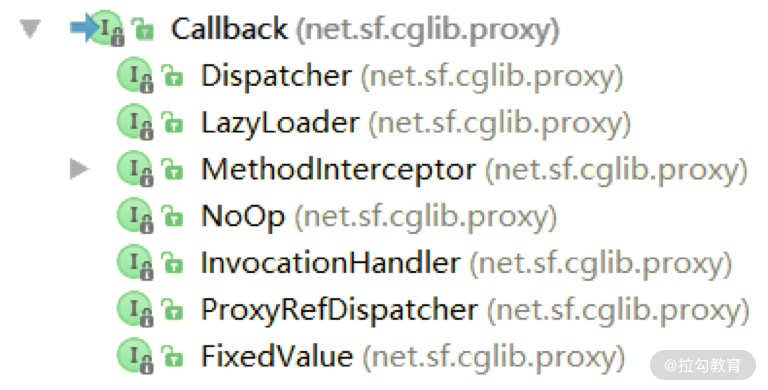

- 00 开篇词 深入掌握 Dubbo 原理与实现，提升你的职场竞争力.md.html
- 01 Dubbo 源码环境搭建：千里之行，始于足下.md.html
- 02 Dubbo 的配置总线：抓住 URL，就理解了半个 Dubbo.md.html
- 03 Dubbo SPI 精析，接口实现两极反转（上）.md.html
- 04 Dubbo SPI 精析，接口实现两极反转（下）.md.html
- 05 海量定时任务，一个时间轮搞定.md.html
- 06 ZooKeeper 与 Curator，求你别用 ZkClient 了（上）.md.html
- 07 ZooKeeper 与 Curator，求你别用 ZkClient 了（下）.md.html
- 08 代理模式与常见实现.md.html
- 09 Netty 入门，用它做网络编程都说好（上）.md.html
- 10 Netty 入门，用它做网络编程都说好（下）.md.html
- 11 简易版 RPC 框架实现（上）.md.html
- 12 简易版 RPC 框架实现（下）.md.html
- 13 本地缓存：降低 ZooKeeper 压力的一个常用手段.md.html
- 14 重试机制是网络操作的基本保证.md.html
- 15 ZooKeeper 注册中心实现，官方推荐注册中心实践.md.html
- 16 Dubbo Serialize 层：多种序列化算法，总有一款适合你.md.html
- 17 Dubbo Remoting 层核心接口分析：这居然是一套兼容所有 NIO 框架的设计？.md.html
- 18 Buffer 缓冲区：我们不生产数据，我们只是数据的搬运工.md.html
- 19 Transporter 层核心实现：编解码与线程模型一文打尽（上）.md.html
- 20 Transporter 层核心实现：编解码与线程模型一文打尽（下）.md.html
- 21 Exchange 层剖析：彻底搞懂 Request-Response 模型（上）.md.html
- 22 Exchange 层剖析：彻底搞懂 Request-Response 模型（下）.md.html
- 23 核心接口介绍，RPC 层骨架梳理.md.html
- 24 从 Protocol 起手，看服务暴露和服务引用的全流程（上）.md.html
- 25 从 Protocol 起手，看服务暴露和服务引用的全流程（下）.md.html
- 26 加餐：直击 Dubbo “心脏”，带你一起探秘 Invoker（上）.md.html
- 27 加餐：直击 Dubbo “心脏”，带你一起探秘 Invoker（下）.md.html
- 28 复杂问题简单化，代理帮你隐藏了多少底层细节？.md.html
- 29 加餐：HTTP 协议 + JSON-RPC，Dubbo 跨语言就是如此简单.md.html
- 30 Filter 接口，扩展 Dubbo 框架的常用手段指北.md.html
- 31 加餐：深潜 Directory 实现，探秘服务目录玄机.md.html
- 32 路由机制：请求到底怎么走，它说了算（上）.md.html
- 33 路由机制：请求到底怎么走，它说了算（下）.md.html
- 34 加餐：初探 Dubbo 动态配置的那些事儿.md.html
- 35 负载均衡：公平公正物尽其用的负载均衡策略，这里都有（上）.md.html
- 36 负载均衡：公平公正物尽其用的负载均衡策略，这里都有（下）.md.html
- 37 集群容错：一个好汉三个帮（上）.md.html
- 38 集群容错：一个好汉三个帮（下）.md.html
- 39 加餐：多个返回值不用怕，Merger 合并器来帮忙.md.html
- 40 加餐：模拟远程调用，Mock 机制帮你搞定.md.html
- 41 加餐：一键通关服务发布全流程.md.html
- 42 加餐：服务引用流程全解析.md.html
- 43 服务自省设计方案：新版本新方案.md.html
- 44 元数据方案深度剖析，如何避免注册中心数据量膨胀？.md.html
- 45 加餐：深入服务自省方案中的服务发布订阅（上）.md.html
- 46 加餐：深入服务自省方案中的服务发布订阅（下）.md.html
- 47 配置中心设计与实现：集中化配置 and 本地化配置，我都要（上）.md.html
- 48 配置中心设计与实现：集中化配置 and 本地化配置，我都要（下）.md.html
- 49 结束语 认真学习，缩小差距.md.html
- 捐赠
08 代理模式与常见实现
动态代理机制在 Java 中有着广泛的应用，例如，Spring AOP、MyBatis、Hibernate 等常用的开源框架，都使用到了动态代理机制。当然，Dubbo 中也使用到了动态代理，在后面开发简易版 RPC 框架的时候，我们还会参考 Dubbo 使用动态代理机制来屏蔽底层的网络传输以及服务发现的相关实现。
本课时我们主要从基础知识开始讲起，首先介绍代理模式的基本概念，之后重点介绍 JDK 动态代理的使用以及底层实现原理，同时还会说明 JDK 动态代理的一些局限性，最后再介绍基于字节码生成的动态代理。
代理模式
代理模式是 23 种面向对象的设计模式中的一种，它的类图如下所示：

图中的 Subject 是程序中的业务逻辑接口，RealSubject 是实现了 Subject 接口的真正业务类，Proxy 是实现了 Subject 接口的代理类，封装了一个 RealSubject 引用。在程序中不会直接调用 RealSubject 对象的方法，而是使用 Proxy 对象实现相关功能。
Proxy.operation() 方法的实现会调用其中封装的 RealSubject 对象的 operation() 方法，执行真正的业务逻辑。代理的作用不仅仅是正常地完成业务逻辑，还会在业务逻辑前后添加一些代理逻辑，也就是说，Proxy.operation() 方法会在 RealSubject.operation() 方法调用前后进行一些预处理以及一些后置处理。这就是我们常说的“代理模式”。
使用代理模式可以控制程序对 RealSubject 对象的访问，如果发现异常的访问，可以直接限流或是返回，也可以在执行业务处理的前后进行相关的预处理和后置处理，帮助上层调用方屏蔽底层的细节。例如，在 RPC 框架中，代理可以完成序列化、网络 I/O 操作、负载均衡、故障恢复以及服务发现等一系列操作，而上层调用方只感知到了一次本地调用。
代理模式还可以用于实现延迟加载的功能。我们知道查询数据库是一个耗时的操作，而有些时候查询到的数据也并没有真正被程序使用。延迟加载功能就可以有效地避免这种浪费，系统访问数据库时，首先可以得到一个代理对象，此时并没有执行任何数据库查询操作，代理对象中自然也没有真正的数据；当系统真正需要使用数据时，再调用代理对象完成数据库查询并返回数据。常见 ORM 框架（例如，MyBatis、 Hibernate）中的延迟加载的原理大致也是如此。
另外，代理对象可以协调真正RealSubject 对象与调用者之间的关系，在一定程度上实现了解耦的效果。
JDK 动态代理
上面介绍的这种代理模式实现，也被称为“静态代理模式”，这是因为在编译阶段就要为每个RealSubject 类创建一个 Proxy 类，当需要代理的类很多时，就会出现大量的 Proxy 类。
这种场景下，我们可以使用 JDK 动态代理解决这个问题。JDK 动态代理的核心是InvocationHandler 接口。这里提供一个 InvocationHandler 的Demo 实现，代码如下：
public class DemoInvokerHandler implements InvocationHandler {
private Object target; // 真正的业务对象，也就是RealSubject对象
public DemoInvokerHandler(Object target) { // 构造方法
this.target = target;
}
public Object invoke(Object proxy, Method method, Object[] args)
throws Throwable {
// ...在执行业务方法之前的预处理...
Object result = method.invoke(target, args);
// ...在执行业务方法之后的后置处理...
return result;
}
public Object getProxy() {
// 创建代理对象
return Proxy.newProxyInstance(Thread.currentThread()
.getContextClassLoader(),
target.getClass().getInterfaces(), this);
}
}
接下来，我们可以创建一个 main() 方法来模拟上层调用者，创建并使用动态代理：
public class Main {
public static void main(String[] args) {
Subject subject = new RealSubject();
DemoInvokerHandler invokerHandler =
new DemoInvokerHandler(subject);
// 获取代理对象
Subject proxy = (Subject) invokerHandler.getProxy();
// 调用代理对象的方法，它会调用DemoInvokerHandler.invoke()方法
proxy.operation();
}
}
对于需要相同代理逻辑的业务类，只需要提供一个 InvocationHandler 接口实现类即可。在 Java 运行的过程中，JDK会为每个 RealSubject 类动态生成相应的代理类并加载到 JVM 中，然后创建对应的代理实例对象，返回给上层调用者。
了解了 JDK 动态代理的基本使用之后，下面我们就来分析 JDK动态代理创建代理类的底层实现原理。不同JDK版本的 Proxy 类实现可能有细微差别，但核心思路不变，这里使用 1.8.0 版本的 JDK。
JDK 动态代理相关实现的入口是 Proxy.newProxyInstance() 这个静态方法，它的三个参数分别是加载动态生成的代理类的类加载器、业务类实现的接口和上面介绍的InvocationHandler对象。Proxy.newProxyInstance()方法的具体实现如下：
public static Object newProxyInstance(ClassLoader loader,
Class[] interfaces, InvocationHandler h)
throws IllegalArgumentException {
final Class<?>[] intfs = interfaces.clone();
// ...省略权限检查等代码
Class<?> cl = getProxyClass0(loader, intfs); // 获取代理类
// ...省略try/catch代码块和相关异常处理
// 获取代理类的构造方法
final Constructor<?> cons = cl.getConstructor(constructorParams);
final InvocationHandler ih = h;
return cons.newInstance(new Object[]{h}); // 创建代理对象
}
通过 newProxyInstance()方法的实现可以看到，JDK 动态代理是在 getProxyClass0() 方法中完成代理类的生成和加载。getProxyClass0() 方法的具体实现如下：
private static Class getProxyClass0 (ClassLoader loader,
Class... interfaces) {
// 边界检查，限制接口数量（略）
// 如果指定的类加载器中已经创建了实现指定接口的代理类，则查找缓存；
// 否则通过ProxyClassFactory创建实现指定接口的代理类
return proxyClassCache.get(loader, interfaces);
}
proxyClassCache 是定义在 Proxy 类中的静态字段，主要用于缓存已经创建过的代理类，定义如下：
private static final WeakCache[], Class> proxyClassCache
= new WeakCache<>(new KeyFactory(),
new ProxyClassFactory());
WeakCache.get() 方法会首先尝试从缓存中查找代理类，如果查找不到，则会创建 Factory 对象并调用其 get() 方法获取代理类。Factory 是 WeakCache 中的内部类，Factory.get() 方法会调用 ProxyClassFactory.apply() 方法创建并加载代理类。
ProxyClassFactory.apply() 方法首先会检测代理类需要实现的接口集合，然后确定代理类的名称，之后创建代理类并将其写入文件中，最后加载代理类，返回对应的 Class 对象用于后续的实例化代理类对象。该方法的具体实现如下：
public Class apply(ClassLoader loader, Class[] interfaces) {
// ... 对interfaces集合进行一系列检测（略）
// ... 选择定义代理类的包名（略）
// 代理类的名称是通过包名、代理类名称前缀以及编号这三项组成的
long num = nextUniqueNumber.getAndIncrement();
String proxyName = proxyPkg + proxyClassNamePrefix + num;
// 生成代理类，并写入文件
byte[] proxyClassFile = ProxyGenerator.generateProxyClass(
proxyName, interfaces, accessFlags);
// 加载代理类，并返回Class对象
return defineClass0(loader, proxyName, proxyClassFile, 0,
proxyClassFile.length);
}
ProxyGenerator.generateProxyClass() 方法会按照指定的名称和接口集合生成代理类的字节码，并根据条件决定是否保存到磁盘上。该方法的具体代码如下：
public static byte[] generateProxyClass(final String name,
Class[] interfaces) {
ProxyGenerator gen = new ProxyGenerator(name, interfaces);
// 动态生成代理类的字节码，具体生成过程不再详细介绍，感兴趣的读者可以继续分析
final byte[] classFile = gen.generateClassFile();
// 如果saveGeneratedFiles值为true，会将生成的代理类的字节码保存到文件中
if (saveGeneratedFiles) {
java.security.AccessController.doPrivileged(
new java.security.PrivilegedAction() {
public Void run() {
// 省略try/catch代码块
FileOutputStream file = new FileOutputStream(
dotToSlash(name) + ".class");
file.write(classFile);
file.close();
return null;
}
}
);
}
return classFile; // 返回上面生成的代理类的字节码
}
最后，为了清晰地看到JDK动态生成的代理类的真正定义，我们需要将上述生成的代理类的字节码进行反编译。上述示例为RealSubject生成的代理类，反编译后得到的代码如下：
public final class $Proxy37
extends Proxy implements Subject { // 实现了Subject接口
// 这里省略了从Object类继承下来的相关方法和属性
private static Method m3;
static {
// 省略了try/catch代码块
// 记录了operation()方法对应的Method对象
m3 = Class.forName("com.xxx.Subject")
.getMethod("operation", new Class[0]);
}
// 构造方法的参数就是我们在示例中使用的DemoInvokerHandler对象
public $Proxy11(InvocationHandler var1) throws {
super(var1);
}
public final void operation() throws {
// 省略了try/catch代码块
// 调用DemoInvokerHandler对象的invoke()方法
// 最终调用RealSubject对象的对应方法
super.h.invoke(this, m3, (Object[]) null);
}
}
至此JDK 动态代理的基本使用以及核心原理就介绍完了。简单总结一下，JDK 动态代理的实现原理是动态创建代理类并通过指定类加载器进行加载，在创建代理对象时将InvocationHandler对象作为构造参数传入。当调用代理对象时，会调用 InvocationHandler.invoke() 方法，从而执行代理逻辑，并最终调用真正业务对象的相应方法。
CGLib
JDK 动态代理是 Java 原生支持的，不需要任何外部依赖，但是正如上面分析的那样，它只能基于接口进行代理，对于没有继承任何接口的类，JDK 动态代理就没有用武之地了。
如果想对没有实现任何接口的类进行代理，可以考虑使用 CGLib。
CGLib（Code Generation Library）是一个基于 ASM 的字节码生成库，它允许我们在运行时对字节码进行修改和动态生成。CGLib 采用字节码技术实现动态代理功能，其底层原理是通过字节码技术为目标类生成一个子类，并在该子类中采用方法拦截的方式拦截所有父类方法的调用，从而实现代理的功能。
因为 CGLib 使用生成子类的方式实现动态代理，所以无法代理 final 关键字修饰的方法（因为final 方法是不能够被重写的）。这样的话，CGLib 与 JDK 动态代理之间可以相互补充：在目标类实现接口时，使用 JDK 动态代理创建代理对象；当目标类没有实现接口时，使用 CGLib 实现动态代理的功能。在 Spring、MyBatis 等多种开源框架中，都可以看到JDK动态代理与 CGLib 结合使用的场景。
CGLib 的实现有两个重要的成员组成。
- Enhancer：指定要代理的目标对象以及实际处理代理逻辑的对象，最终通过调用 create() 方法得到代理对象，对这个对象所有的非 final 方法的调用都会转发给 MethodInterceptor 进行处理。
- MethodInterceptor：动态代理对象的方法调用都会转发到intercept方法进行增强。
这两个组件的使用与 JDK 动态代理中的 Proxy 和 InvocationHandler 相似。
下面我们通过一个示例简单介绍 CGLib 的使用。在使用 CGLib 创建动态代理类时，首先需要定义一个 Callback 接口的实现， CGLib 中也提供了多个Callback接口的子接口，如下图所示：

这里以 MethodInterceptor 接口为例进行介绍，首先我们引入 CGLib 的 maven 依赖：
<dependency>
<groupId>cglib</groupId>
<artifactId>cglib</artifactId>
<version>3.3.0</version>
</dependency>
下面是 CglibProxy 类的具体代码，它实现了 MethodInterceptor 接口：
public class CglibProxy implements MethodInterceptor {
// 初始化Enhancer对象
private Enhancer enhancer = new Enhancer();
public Object getProxy(Class clazz) {
enhancer.setSuperclass(clazz); // 指定生成的代理类的父类
enhancer.setCallback(this); // 设置Callback对象
return enhancer.create(); // 通过ASM字节码技术动态创建子类实例
}
// 实现MethodInterceptor接口的intercept()方法
public Object intercept(Object obj, Method method, Object[] args,
MethodProxy proxy) throws Throwable {
System.out.println("前置处理");
Object result = proxy.invokeSuper(obj, args); // 调用父类中的方法
System.out.println("后置处理");
return result;
}
}
下面我们再编写一个要代理的目标类以及 main 方法进行测试，具体如下：
public class CGLibTest { // 目标类
public String method(String str) { // 目标方法
System.out.println(str);
return "CGLibTest.method():" + str;
}
public static void main(String[] args) {
CglibProxy proxy = new CglibProxy();
// 生成CBLibTest的代理对象
CGLibTest proxyImp = (CGLibTest)
proxy.getProxy(CGLibTest.class);
// 调用代理对象的method()方法
String result = proxyImp.method("test");
System.out.println(result);
// ----------------
// 输出如下：
// 前置代理
// test
// 后置代理
// CGLibTest.method():test
}
}
到此，CGLib 基础使用的内容就介绍完了，在后面介绍 Dubbo 源码时我们还会继续介绍涉及的 CGLib 内容。
Javassist
Javassist 是一个开源的生成 Java 字节码的类库，其主要优点在于简单、快速，直接使用Javassist 提供的 Java API 就能动态修改类的结构，或是动态生成类。
Javassist 的使用比较简单，首先来看如何使用 Javassist 提供的 Java API 动态创建类。示例代码如下：
public class JavassistMain {
public static void main(String[] args) throws Exception {
ClassPool cp = ClassPool.getDefault(); // 创建ClassPool
// 要生成的类名称为com.test.JavassistDemo
CtClass clazz = cp.makeClass("com.test.JavassistDemo");
StringBuffer body = null;
// 创建字段，指定了字段类型、字段名称、字段所属的类
CtField field = new CtField(cp.get("java.lang.String"),
"prop", clazz);
// 指定该字段使用private修饰
field.setModifiers(Modifier.PRIVATE);
// 设置prop字段的getter/setter方法
clazz.addMethod(CtNewMethod.setter("getProp", field));
clazz.addMethod(CtNewMethod.getter("setProp", field));
// 设置prop字段的初始化值，并将prop字段添加到clazz中
clazz.addField(field, CtField.Initializer.constant("MyName"));
// 创建构造方法，指定了构造方法的参数类型和构造方法所属的类
CtConstructor ctConstructor = new CtConstructor(
new CtClass[]{}, clazz);
// 设置方法体
body = new StringBuffer();
body.append("{\n prop=\"MyName\";\n}");
ctConstructor.setBody(body.toString());
clazz.addConstructor(ctConstructor); // 将构造方法添加到clazz中
// 创建execute()方法，指定了方法返回值、方法名称、方法参数列表以及
// 方法所属的类
CtMethod ctMethod = new CtMethod(CtClass.voidType, "execute",
new CtClass[]{}, clazz);
// 指定该方法使用public修饰
ctMethod.setModifiers(Modifier.PUBLIC);
// 设置方法体
body = new StringBuffer();
body.append("{\n System.out.println(\"execute():\" " +
"+ this.prop);");
body.append("\n}");
ctMethod.setBody(body.toString());
clazz.addMethod(ctMethod); // 将execute()方法添加到clazz中
// 将上面定义的JavassistDemo类保存到指定的目录
clazz.writeFile("/Users/xxx/");
// 加载clazz类，并创建对象
Class<?> c = clazz.toClass();
Object o = c.newInstance();
// 调用execute()方法
Method method = o.getClass().getMethod("execute",
new Class[]{});
method.invoke(o, new Object[]{});
}
}
执行上述代码之后，在指定的目录下可以找到生成的 JavassistDemo.class 文件，将其反编译，得到 JavassistDemo 的代码如下：
public class JavassistDemo {
private String prop = "MyName";
public JavassistDemo() {
prop = "MyName";
}
public void setProp(String paramString) {
this.prop = paramString;
}
public String getProp() {
return this.prop;
}
public void execute() {
System.out.println("execute():" + this.prop);
}
}
Javassist 也可以实现动态代理功能，底层的原理也是通过创建目标类的子类的方式实现的。这里使用 Javassist 为上面生成的 JavassitDemo 创建一个代理对象，具体实现如下：
public class JavassitMain2 {
public static void main(String[] args) throws Exception {
ProxyFactory factory = new ProxyFactory();
// 指定父类，ProxyFactory会动态生成继承该父类的子类
factory.setSuperclass(JavassistDemo.class);
// 设置过滤器，判断哪些方法调用需要被拦截
factory.setFilter(new MethodFilter() {
public boolean isHandled(Method m) {
if (m.getName().equals("execute")) {
return true;
}
return false;
}
});
// 设置拦截处理
factory.setHandler(new MethodHandler() {
@Override
public Object invoke(Object self, Method thisMethod,
Method proceed, Object[] args) throws Throwable {
System.out.println("前置处理");
Object result = proceed.invoke(self, args);
System.out.println("执行结果:" + result);
System.out.println("后置处理");
return result;
}
});
// 创建JavassistDemo的代理类，并创建代理对象
Class<?> c = factory.createClass();
JavassistDemo JavassistDemo = (JavassistDemo) c.newInstance();
JavassistDemo.execute(); // 执行execute()方法，会被拦截
System.out.println(JavassistDemo.getProp());
}
}
Javassist 的基础知识就介绍到这里。Javassist可以直接使用 Java 语言的字符串生成类，还是比较好用的。Javassist 的性能也比较好，是 Dubbo 默认的代理生成方式。
总结
本课时我们首先介绍了代理模式的核心概念和用途，让你对代理模式有初步的了解；然后介绍了 JDK 动态代理使用，并深入到 JDK 源码中分析了 JDK 动态代理的实现原理，以及 JDK 动态代理的局限；最后我们介绍了 CGLib和Javassist这两款代码生成工具的基本使用，简述了两者生成代理的原理。
那你还知道哪些实现动态代理的方式呢？欢迎你在评论区留言讨论。
© 2019 - 2023 Liangliang Lee. Powered by gin and hexo-theme-book.